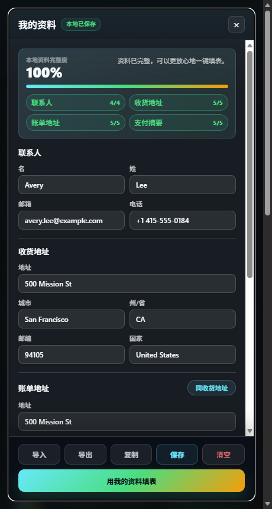
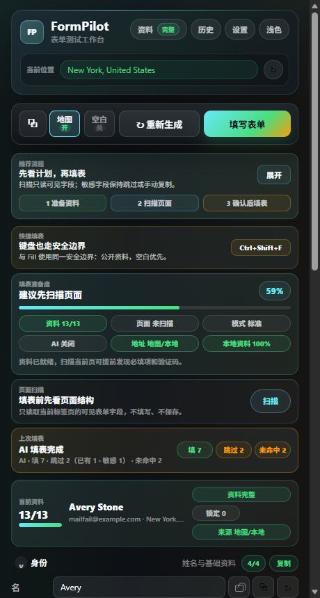
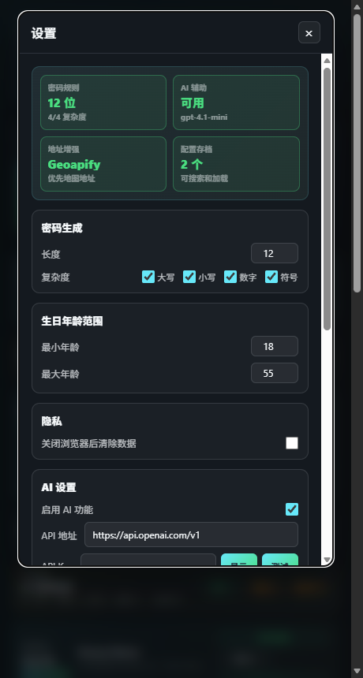
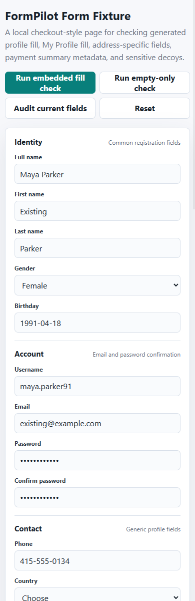

01
Prepare profile
Generate local-looking test data or keep reusable contact details in My Profile.

Reusable contact profile
A compact journey for GitHub and Chrome Web Store reviewers: real popup surfaces, explicit user action, and a visible sensitive-field boundary.
Generate local-looking test data or keep reusable contact details in My Profile.

Read the visible form shape on the active tab before changing any field values.

Check readiness, likely matches, required gaps, and sensitive fields that will be skipped.

Click Fill, My Profile fill, or the shortcut when the preview looks right.
